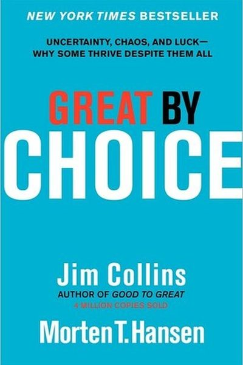

Library › Business & Startups
Great by Choice — Summary & Key Lessons

Uncertainty, chaos and luck — why some thrive despite them all. The 10xers' rules: 20 Mile March, bullets before cannonballs, and the SMaC recipe.
📖 OPEN THE FULL INTERACTIVE BREAKDOWN →🌐 Read it in Hindi, Hinglish, Gujarati, Tamil & 22 more languages — free, with audio.
💡 The Big Idea
Collins studied companies that outperformed extreme environments (the 10xers) vs comparable companies that didn't. The 10xers shared: 1) Fanatic discipline — the 20 Mile March (consistent progress in good AND bad times), 2) Empirical creativity — bullets first (cheap experiments) then cannonballs (big bets only after evidence), 3) Productive paranoia — prepare for what you can't predict, 4) The SMaC recipe — a simple, specific, stable operating formula. Luck matters; what you do with it is a choice.
🧠 The 5 Key Lessons
Lesson 1: The 20 Mile March: Discipline Beats Talent
The 10xers
10xers set a performance floor AND ceiling they hit in every condition — like walking 20 miles a day regardless of weather. They don't sprint in boom times or panic in busts. This consistency builds credibility, momentum and calm. The 'ceiling' matters as much as the floor: don't overreach in good times.
📖 Example: In the chaotic airline industry post-deregulation, Southwest marched 20 miles: consistent growth and profit every single year, while high-flying competitors crashed. Same storm, different discipline. Read the full example →
⚡ Do this: Define YOUR 20-mile march: the minimum you do daily/weekly in bad times, and the maximum you allow yourself in good times.
Lesson 2: Bullets Before Cannonballs
Bullets & Cannonballs
Great companies test the world with cheap, fast 'bullets' — small experiments — and only after a bullet hits the target do they fire a 'cannonball' (big investment). Cannonballs without bullets are gambling; bullets without cannonballs are dabbling.
📖 Example: Apple's iPod was a bullet from an existing MP3-player experiment; the massive iTunes + iPod cannonball followed the hit. Amazon tested Prime as a small experiment before betting billions. Read the full example →
⚡ Do this: Before your next big bet, design the cheapest possible test (one customer, one ad, one prototype). Fire the bullet first.
Lesson 3: Productive Paranoia: Prepare for the Unpredictable
Productive Paranoia
10xers are paranoid in a productive way: they keep cash reserves, build buffers, and run 'what if' drills — not because they can predict crises, but because they know they can't. They prepare for storms they can't name. The calm during chaos is manufactured beforehand.
📖 Example: Intel prepared for 'the disaster scenario' — and when the memory business crashed overnight, the prepared plans kicked in instantly. Companies without buffers didn't survive the same storm. Read the full example →
⚡ Do this: Run a 'what if' drill: what would you do if your main income/plan vanished in 30 days? Write the one-page response now, while calm.
Lesson 4: The SMaC Recipe: Simple, Concrete, Stable
The SMaC Recipe
10xers operate on a SMaC recipe — a short list of simple, concrete rules (e.g., 'no debt, low fares, point-to-point routes') that stays remarkably stable for decades. The recipe is their operating identity: they change it rarely and only with evidence. Complexity is the enemy of consistency.
📖 Example: Southwest's SMaC recipe stayed almost unchanged for 25 years — every new initiative was filtered through it. When the recipe changed, it changed deliberately, once. Read the full example →
⚡ Do this: Write YOUR SMaC recipe: 4-6 simple rules that define how you operate. Filter your next 3 decisions through it. Change it rarely.
Lesson 5: Return on Luck: Luck Is What You Make of It
Return on Luck
Everyone gets lucky and unlucky; the difference is return on luck. 10xers turn good luck into more (investing the windfall) and bad luck into less (containing the damage). Luck is an input; the return is a choice.
📖 Example: Both Southwest and PSA got the same lucky break (deregulation) — Southwest converted it into a durable advantage; PSA squandered it. Same luck, different return. Read the full example →
⚡ Do this: Think of your last piece of good luck: did you invest it or spend it? And your last bad luck: did you contain it or let it compound?
✅ 5-Step Action Plan
- Define your 20-mile march (floor AND ceiling).
- Design one cheap bullet-test before your next big bet.
- Write your one-page disaster-response plan now.
- Write your SMaC recipe and filter decisions through it.
- Compute your return on the last two pieces of luck.
⚠️ When This Doesn't Work
Collins' '20-mile march' is the most disciplined strategy framework ever — and Spirit Airlines is its live experiment: no company marched its 20 miles more faithfully — consistent execution, strict discipline, razor-thin costs, decade after decade — and it still went bankrupt when the environment stopped cooperating: grounded engines, a blocked merger, a pandemic. The 20-mile march assumes the road stays marchable. Collins' own data underweights the cases where disciplined execution meets an environment that simply doesn't care about your discipline. March on — but budget for the blizzard that no march can out-discipline.
💀 The Graveyard Proves It
✈️ Spirit Airlines — The Budget Airline That Bet Everything on 'Bare Fare'. Burn: $3.8B debt → Chapter 11 bankruptcy. Read the full case study →
💬 Best Quotes from Great by Choice
- “The 20 Mile March: a hallmark of 10xers is progress in good times and bad, year after year.”
- “First fire bullets, then fire cannonballs.”
- “We cannot predict the future, but we can prepare for it.”
Interactive version: mark lessons as read, listen in your language, share quote cards.